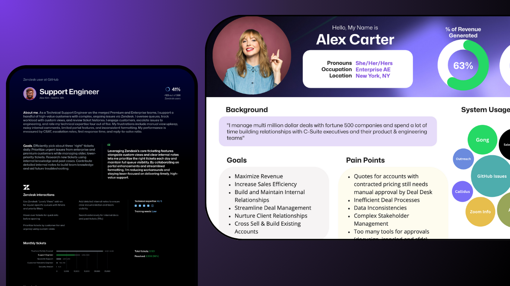

Building AI Products and Enterprise Platforms at GitHub
Expanded from Revenue Systems into Slack and employee-support platforms by pairing product discipline with applied AI. Product-managed a sales intelligence platform through 17 releases and $26.6M in FY26 pipeline, authored enterprise platform strategy, and co-led an AI support pilot that reached 85% deflection.
User Research & Journey Mapping
Established a research practice in Revenue Systems by engaging 30+ sellers, managers, and support leads to develop actionable personas and workflow maps. The work translated live user insights into roadmap priorities, workflow improvements, and AI automation opportunities.
Seller Journey Mapping
Charted daily workflows, friction points, and opportunity areas for sales teams.
View Seller Journey Mapping →Workflow Exploration
Documented core revenue systems workflows and surfaced cross-team inefficiencies.
Explore Workflow Mapping →Zendesk Personas
Worked with design to create support personas for Zendesk product strategy.
View Zendesk Personas →Customer Comms Tooling
Mapped and analyzed all customer communication tools, surfacing gaps and integration opportunities.
See Customer Comms Tooling →
Transformation Story
My GitHub scope grew from building product foundations in Revenue Systems to owning strategy and pilots across Salesforce, Slack, AI support, and product operations. Each step followed the same model: understand the users, establish measurable outcomes, and create a delivery system that can scale.
Established the Research Practice
Conducted 30+ interviews and built six personas, seller journey maps, and workflow analyses to turn fragmented stakeholder feedback into product direction.
Scaled GitHub Recommender
Led the product through v2.16, introducing sprint planning, story-point estimation, velocity tracking, and capacity-based prioritization across 17 versioned releases.
Expanded Into Slack Product Ownership
Authored an enterprise Slack strategy centered on interoperability, AI in the flow of work, and an extensible platform model.
Validated AI and Platform Bets
Co-led an AI support pilot and launched Salesforce Channels testing across three enterprise account teams, building the feedback loops and success criteria needed to guide investment.
Current Product Portfolio
A portfolio spanning revenue intelligence, enterprise collaboration, AI-enabled employee support, CRM interoperability, and operational automation. Each initiative pairs a measurable business outcome with a repeatable product operating model.
Account Recommender AI
LiveSales intelligence product in Salesforce that helps sellers prioritize accounts and act on product, marketing, and revenue signals.
Slack Enterprise Platform Strategy
LiveAuthored the strategy and roadmap for treating Slack as an enterprise platform, centered on interoperability, AI in the flow of work, and extensibility.
Enterprise AI Support Pilot
PilotCo-led a cross-functional pilot to test permission-aware, conversational support across employee systems, reaching 85% deflection across 338 queries.
Salesforce Channels Pilot
PilotLaunched a pilot connecting account conversations with CRM context and built the participant onboarding, feedback collection, and governance plan for broader rollout.
IT Ops PMO Automation
LiveBuilt a Copilot Space-based reporting workflow that consolidates program context and is estimated to avoid 240 hours of manual synthesis annually.
Product Operating System Impact
Before
- No estimation or velocity tracking
- Unpredictable commitments
- No sprint ceremonies
- Reactive, not proactive
- No trade-off conversations
Current State
- All issues estimated in story points
- Data-driven capacity planning
- Consistent sprint ceremonies
- Roadmap and backlog planning
- Stakeholders engaged in trade-offs
Next Evolution
- Autonomous sprint planning via AI
- Predictive velocity modeling
- Zero-touch status reporting
- AI-powered retrospectives
- Full GitOps automation
How I Scale Product Impact
"The strongest product strategy connects user evidence, business outcomes, and a delivery system teams can repeat."
Start With the User
Research creates the shared language needed to move teams from competing opinions to clear product decisions.
Prove Value Before Scale
Pilots with explicit baselines, success criteria, and feedback loops make investment decisions faster and more defensible.
Build the Operating System
Sustainable impact comes from repeatable roadmaps, release cadences, prioritization rules, and measurement, not one-time heroics.
Driving Scalable Product Transformation
I bring AI automation, agile discipline, and systems thinking to organizations ready for strategic growth. If you need a leader who can inherit complexity, architect scalable solutions, and deliver repeatable outcomes, let’s connect.